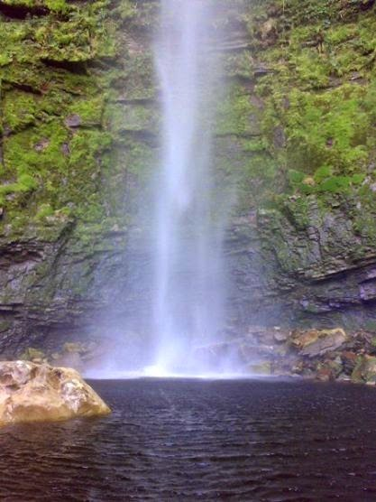

Salto Vichía
Una cascada ideal para caminatas y fotografía. Accesible con guía local.
Mi página está diseñada para brindar información sobre Cunday, Tolima, un municipio lleno de cultura, naturaleza y tradiciones. Aquí encontrarás datos sobre sus principales atractivos turísticos, opciones de transporte, hoteles, gastronomía y lugares representativos, con el objetivo de dar a conocer todo lo que este hermoso destino tiene para ofrecer a visitantes y habitantes.
Descubre los rincones naturales y culturales que hacen especial a Cunday.
Una cascada ideal para caminatas y fotografía. Accesible con guía local.
Corazón del pueblo: iglesia, kioscos y actividades culturales en fines de semana.
Miradores con vistas panorámicas del valle y atardeceres espectaculares.
Opciones para todos los gustos: desde hospedajes familiares hasta posadas rurales.
Opciones para todos los gustos: desde hospedajes familiares hasta posadas rurales.
e caracteriza por platos típicos de la región como la lechona y el tamal tolimense, además de otros elementos como el viudo de pescado, que se prepara con pescado, yuca y plátano. La zona es conocida por sus frutas, incluyendo aguacate y cítricos.

Es un plato elaborado con un cerdo entero horneado, cuyo relleno principal es arroz con carne de cerdo, arvejas y especias.

Consiste en una masa de maíz rellena de carne de cerdo, cebolla y especias, envuelta en hojas de plátano.

Un plato que incluye pescado, yuca, plátano y mazorca, cocinados con ingredientes locales y sazonados con especias.

Una combinación de arroz, carne de cerdo, pollo, papa, yuca, y huevo duro, envuelto en hojas de viado.